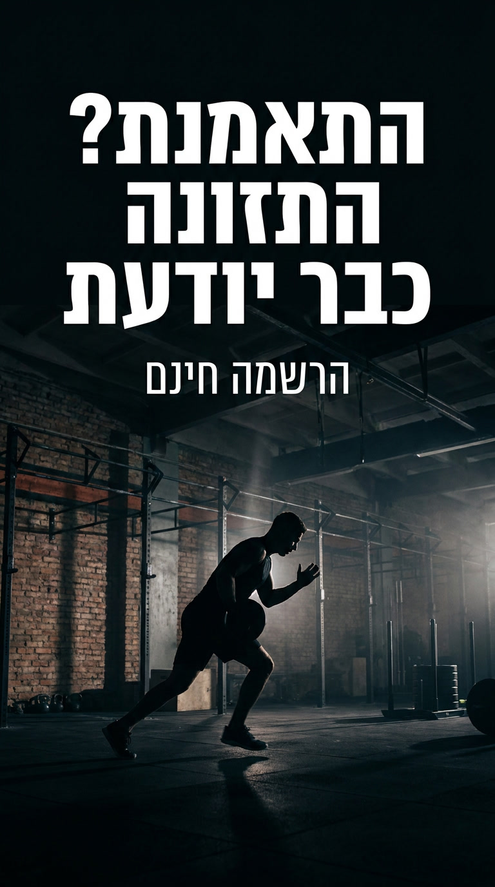

כל קריאייטיב בשתי גרסאות — נקי לסטורי עם סטיקר לינק, ועם כתובת מודפסת לשיתוף.
1080×1920, מוכן להעלאה.
1 · הבסיס
מה זה מצב?
מצב היא אפליקציית AI לאימונים ותזונה.
מה עושים בה
מתעדים אימונים, סטים, משקלים, אירובי ויעדי נפח.
רושמים ארוחות, קלוריות ומאקרו.
ומתייעצים עם AI שמכיר את האימונים, התזונה, ההיסטוריה והיעדים.
ומה שונה בה
ה-AI לא רק עונה על שאלות. אפשר להשתמש בו כדי לרשום ארוחה, לבנות אימון,
להבין מה עשיתם, ומה כדאי לעשות עכשיו.
המסר הראשי
מצב
אימונים, תזונה ו-AI שמלווה את שניהם.
מתעדים אימונים וארוחות, עוקבים אחרי ההתקדמות, ומתייעצים עם AI שמכיר את הנתונים והיעדים שלכם.
אפשר לרשום ארוחה במשפט.
אפשר לבנות אימון בשיחה.
אפשר להבין מה עשיתם השבוע.
ואפשר לשאול מה כדאי לעשות עכשיו.
2 · המסרים
שני המסרים שנושאים את הקמפיין
אלה שני המסרים שהכי מבדילים את מצב: שיחה שהופכת לפעולה, ואימון שמשפיע על התזונה.
1 · אומרים משפט, מקבלים אובייקט אמיתי
לא ״צ׳אט עם AI״. כותבים ״אכלתי פיצה על דף אורז״ ומקבלים כרטיס עם 90 + 20 + 110,
לוחצים הוסף, וזה בתוך היום. מבקשים אימון ומקבלים אימון עם כפתור התחל.
השיחה היא אמצעי קלט, לא מוקד תמיכה.
2 · האימון נכנס למאזן של היום
28 סטים ו-20 דקות אופניים → +320 → מה שנשאר לאכול עולה מ-620 ל-940,
בלי שהמשתמש הזין כלום. ברוב המוצרים האימון והאוכל עדיין מרגישים כמו שני עולמות נפרדים.
הקמפיין כולו עומד על שלושה דברים:
שיחה שהופכת לפעולה · אימון שמשפיע על התזונה · AI שאפשר להתייעץ איתו על האימון והתזונה.
ה-AI כמלווה, לא רק כמבצע. ״עשיתי כתפיים לפני יומיים, מה כדאי היום?״ ·
״נשאר לי חלבון לערב, מה אפשר לאכול?״ — זה ההבדל בין עוד אפליקציית מעקב לבין ליווי.
3 · הליבה
שלושת הקריאייטיבים החזקים
אלה נושאים את הקמפיין. הם לא טוענים כלום — רואים בהם את השיחה הופכת לממשק.
סטורי + סטיקר לינק של אינסטגרם. ממירה הכי טוב —
הסטיקר לחיץ, כתובת מודפסת לא.
גרסה עם כתובת
לוואטסאפ, שיתופים חוזרים והדפסה. סטיקרים לא שורדים ריפוסט, הכתובת כן.
סדר הפרסום
1
מכירים את מצב
c01-meet — אימונים, תזונה ו-AI שמלווה את שניהם.
2
כותבים משפט → מקבלים ארוחה
c02-meal — הקריאייטיב החזק בסט. פותחים איתו את הליבה.
3
מבקשים אימון → מקבלים כפתור התחל
c03-workout
4
התאמנת? התזונה כבר יודעת
c04-burn — החיבור בין שני המצבים.
5
מה כדאי לי לעשות היום?
c05-next — ה-AI כמלווה.
6
נשאר לי חלבון לערב
c06-protein
7
ככה נראה מצב אימון / מצב תזונה
c07 · c08 — המסכים האמיתיים.
8
בטא פתוחה
c09-free — הסרת החסם.
9
מאמנות ומאמנים
c10-coach — הזמנה להתנסות ובקשת פידבק.
כיתובים
כותבים מה אכלתם במשפט אחד. ה-AI מפרק לרכיבים, סופר קלוריות, ואתם מאשרים.
הרשמה חינם, בלינק.
התאמנתם היום? האימון נכנס למאזן, ומה שנשאר לאכול כבר מעודכן.
הרשמה חינם, בלינק.
אימון ותזונה באותה מערכת, עם AI שמכיר את ההיסטוריה והיעדים
ועוזר גם לתעד, גם לבנות וגם להחליט מה עכשיו.
הודעה למאמנים
היי, בניתי אפליקציה שנקראת מצב — אימון ותזונה באותה מערכת, עם AI שמכיר את ההיסטוריה.
היא בבטא פתוחה וחינמית. אשמח שתתנסה ותגיד לי מה חסר מבחינה מקצועית.
תוספת
עוד 7 קריאייטיבים
עשרת הקריאייטיבים שלמעלה לא השתנו. אלה נוספים עליהם, בשתי שיטות שונות —
4 עם צילום חדש של Leonardo וטיפוגרפיה ב-HTML, ו-3 שבהם
Leonardo כתב את הכותרת בעברית בעצמו ורק הסימן, ה-CTA והכתובת הודבקו מעליו.
מה שנלמד מהעברית שהמחולל כתב: מתוך 7 ניסיונות, 4 יצאו נכונים ו-3 עם שגיאת אות —
״ייודעת״ במקום יודעת, ״מבקשם״ במקום מבקשים, ו״התזוומה״ במקום התזונה. הכותרת
״התאמנת? התזונה כבר יודעת״ נכשלה פעמיים מתוך שלוש.
כל תמונה כזאת חייבת הגהה לפני שימוש, וכל ניסיון חוזר עולה $0.21.
כאן נכנסו רק תמונות שנבדקו אות-אות.
הערות פנימיות
מכאן והלאה — תיעוד עבודה: מה ירד ולמה, כללי הכתיבה ובדיקות. לא חלק מהחומר שנשלח החוצה.
פנימי · מה ירד
השפה: מצב הוא מקום, לא מי שעושה
״מצב״ עובד כמותג וכשפה פנימית — מצב אימון, מצב תזונה, מצב נשימה. הוא לא עובד כפועל,
כי בעברית ״מצב״ הוא גם situation, והמשפט נשמע לא טבעי. כל הניסוחים האלה יצאו:
לא
כן
״מצב מתעד את מה שעשיתם״
״במצב אפשר לתעד אימונים וארוחות״
״מצב מפרק את הארוחה״
״ה-AI מפרק את הארוחה לרכיבים״
״מצב מוסיף את זה למאזן״
״האימון נכנס למאזן של היום״
״מצב יודע מה עשית״
״התשובה יוצאת מהאימונים שלכם״
״מצב בונה לך אימון״
״מבקשים אימון ומקבלים אימון שאפשר להתחיל״
הכלל: מצב = המקום, המוצר, המותג. ה-AI או המערכת = מי שעושה פעולה.
והכי טוב — ניסוח ישיר בלי נושא בכלל: ״כותבים משפט ומקבלים ארוחה״.
קריאייטיבים שנפסלו
המבחן: אם המשפט היה עובד מילה במילה אצל מתחרה — הוא לא נכנס.
הטקסט שהיה
למה ירד
״כל סט שעשית. נשמר.״
כל אפליקציית כושר שומרת סטים.
״הכול קורה תוך כדי.״
רשימת פיצ׳רים. טיימר וסטופר הם סטנדרט, לא סיבה להירשם.
״התרגילים שלך. הארוחות שלך.״
ספרייה אישית קיימת בכל אפליקציה בקטגוריה.
״שתי דקות ביום.״
הבטחה שאי אפשר להוכיח, ולא נובעת משום דבר במוצר.
״לא רק חדר כושר.״
לא אומר כלום. מגדיר את המוצר במה שהוא לא.
״הם מתעדים. אתם רואים הכול.״
מבטיח מוצר מאמנים שעוד לא קיים. הוחלף בהזמנה כנה להתנסות.
״נתונים, לא צילומי מסך.״
עקיצה במתחרים. לא מוסיפה כלום למי שעוד לא מכיר את המוצר.
״היעד היומי מחושב מכם.״
יעד קלורי מחושב יש לכולם. בלי הטוויסט של האימון — קומודיטי.
שתי זהירויות שנשמרות בכל הסט: תזונה — שפה של הכוונה, לא של ייעוץ: ״אפשרות טובה לערב״, ״לפי מה שנשאר היום״.
לא ״תאכלו X״ ולא ״זה מה שאתם צריכים״. מאמנים — אין הבטחת dashboard או ״לכל מתאמן״, כי מוצר מאמנים עוד לא קיים.
רק הזמנה כנה להתנסות ובקשת פידבק.
פנימי · נספח
עברית ישירות מתוך מחולל התמונות

בדיקה שהרצתי ב-Leonardo עם gemini-image-2, כשהעברית נוצרת בתוך התמונה עצמה.
העברית יצאה נכונה לחלוטין, כולל RTL ואותיות סופיות. עלות: $0.21.
עדיין, ל-pipeline של סט שלם עדיף להשאיר טיפוגרפיה ב-HTML — מסיבות מעשיות:
שינוי מילה = הרצה מחדש, תשלום מחדש וקומפוזיציה אחרת. ב-HTML זה שינוי טקסט.
הסימן של מצב לא משוחזר במדויק אף פעם.
טקסט קטן עדיין נשבר — וזה בדיוק מה שגרסת ה-with-url צריכה.
אי אפשר לקבל נקי ועם-כתובת מאותה קומפוזיציה בהרצות נפרדות.
מתאים לקריאייטיב בודד שלא ישתנה ולא צריך לוגו מדויק.
לשנות טקסט
הכול data. אין עבודת עיצוב בשינוי מילים.
code/campaign.js — 10 הקריאייטיבים, כולל כלל השפה בראש הקובץ
node code/build_campaign.js — בונה מחדש את 20 הקבצים
הכתובת נמצאת ב-SITE_URL
מקור מלא: C:/workspace/matzav-marketing. צילומי Leonardo יושבים ב-leo/
ולא צריך לייצר אותם מחדש כדי לשנות טקסט.